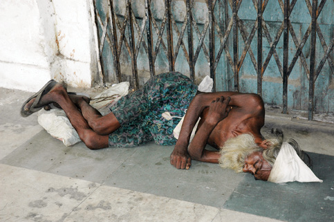

NEPAL, 25 AĞUSTOS
Günlerimiz azalıyor, geri dönme planları yapmaya başladık. Dönüş fikri bile üzücü. Fakat yine de bu yolculuk tamamen hedefine ulaştı. Üniversitede harcadığımız boş günlere tekrar tekrar yanıyorum. Bir sürü gelişim kitabı satılıyor. Geçmişte ben de aldım okudum. Şüphesiz faydalı olanları da var. Ancak Nepal’deki günlerimizden sonra şunu rahatlıkla söyleyebiliyorum. Mutluluğun yolunu bulmuş, hayat denen olayı çözmüş bir ülke gördüm. Bu anlamda Nepal kültürünün daha bozulmamış bir halinin yaşandığı düşündüğüm Tibet’e gitmek artık şart oğlu şart oldu.
Nepalliler zengin mi, lüks mü yaşıyor, gelecekleri çok mu parlak? Tüm bu soruların cevabı, hayır. Peki gülümseyen suratların sebebi yüksek dağlardan gelen taze oksijen olabilir mi? Ya da hiçbir canlıya zarar vermeme fikrinin temel olduğu Budizm olabilir mi?
Bugün Swayambhunath’ı6 gezdik Kumar’la beraber. Turistik bölgenin dışındaki uzak mahallelere, küçük marketlere, tarlalara, çok bilinen ünlü tapınakların dışında daha küçük ve belki de daha samimi mahalle tapınaklarına, sunaklara, yerel dükkânlara uğrayarak yaptığımız uzun Katmandu yürüyüşü beni çeşitli fikirlere sürükledi. Kumar sayesinde yerel halka daha yakın olabildik; turist bölgesinden uzakta yaptığımız bu yürüyüş sırasında, görmeye alışık olmadığımız sokaklara ve insanlara şaşkın şaşkın baktık. Belki de en çok fotoğrafı bugün çekmem gerekiyorken en azını bugün çektim. Delisini de gördük halkın, yaşlısını da, kokain çekenini, uyuşturucu satanını da, yollarda satranç oynayanını da.
İşleri, yaptıkları, sosyal konumları, kıyafetleri ne olursa olsun Nepallilerin hepsinin yüzünde olan tıpkı gülümsemeyi görünce bende ipler koptu. Yukarıdaki hipotezlerimin dışında, bunun gerçek “sebebi hikmetini” mutlaka bulmalıyım.
Hele, Swayambhunath’ın o ünlü ve çok uzun merdivenlerinde gördüğümüz minik kız çocuğu; Budist selamı verip güzel gözlerinin içi gülerek “Namaste” deyince ağlamaklı oldum. Yabancı insanlardan kaçan, başkasını görünce genelde ağlayan, annesinin bacakları arasına saklanan çocuklar yerine Budha’nın kutsal gülümsemesini takınmış çocuklar görmek anlatılmaz derecede etkileyici. Budha “Evren nasıl oluştu, reenkarnasyon çevrimi bitince ruhumuza ne olacak?” diye sorulduğunda ilahi gülümsemesini takınır ve herhangi bir cevap vermezmiş derler.
Şimdi soruyorum kendime, dünyanın en mutlu insanları gibi görünen Nepallilerin içlerindeki bu bulaşıcı iyimserliğin sebebi ne olabilir diye?
Cevap, o kutsal ve kocaman gülümseme elbette.

Hindistan, Delhi
“Yorumsuz.”
6 7 kutsal Budist tapınağından biri (Maymunlar Tapınağı)